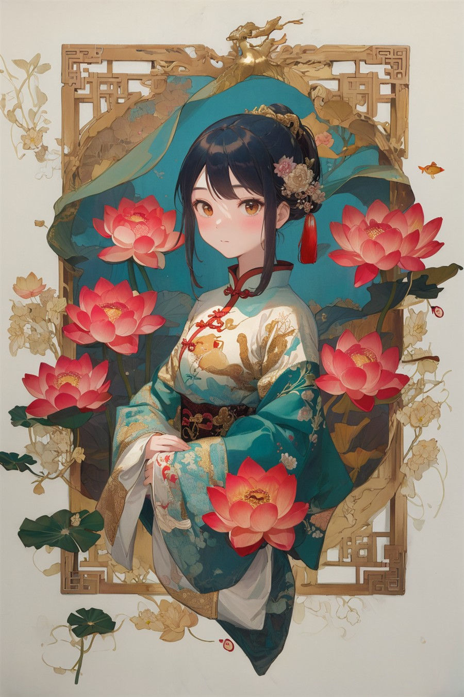
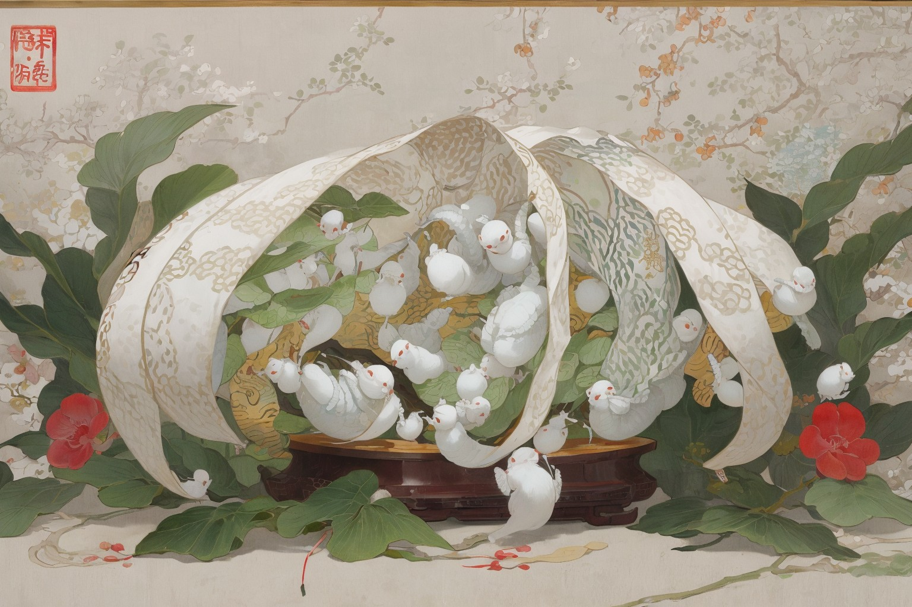
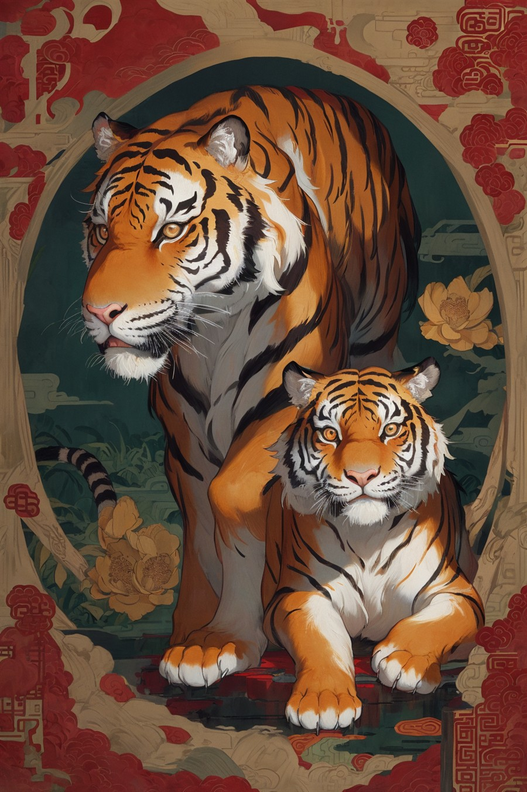
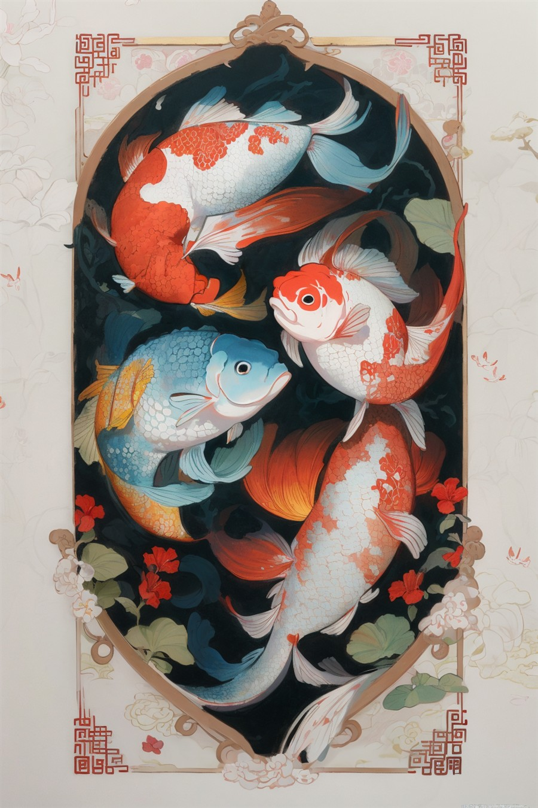
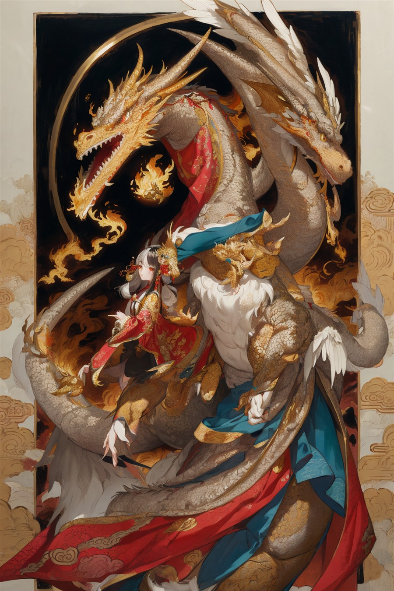
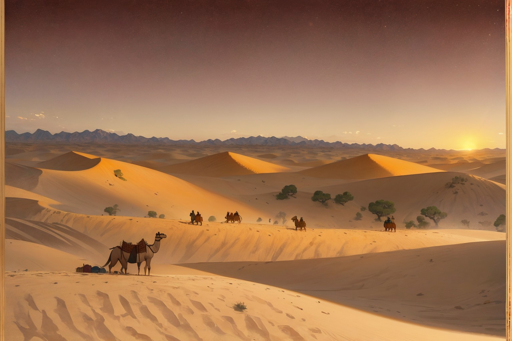
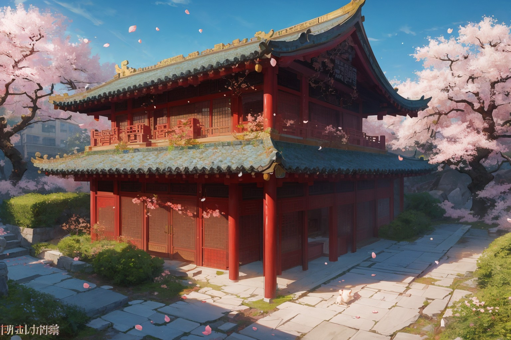
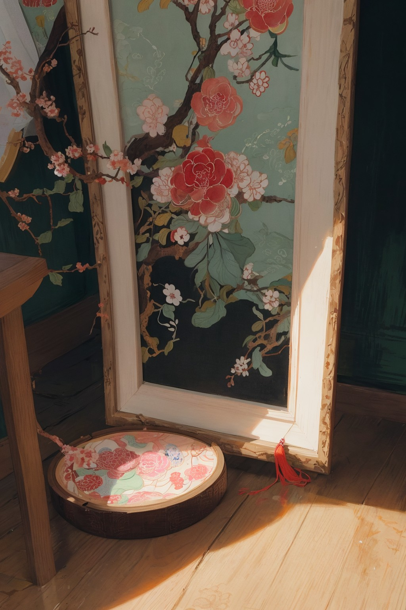
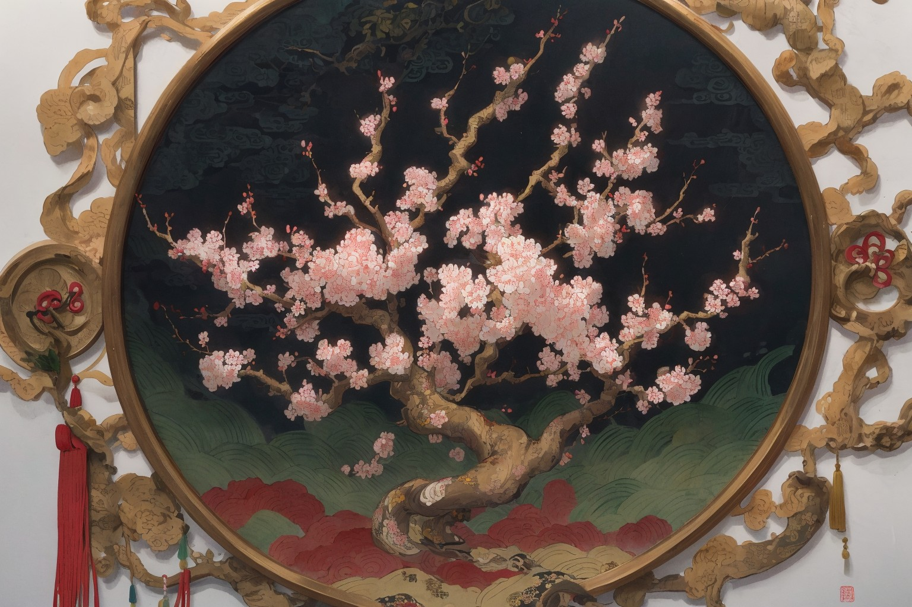

苏绣
江苏 · 苏州
精细雅洁 · 以针作画
针脚细密，丝理圆转，善作双面绣。齐针、套针、施针皆精，一针一线仿画之神韵，被誉为“以针作画，巧夺天工”。
开篇 · 一针千年
锦 绣 长 卷 · 非 遗 织 绣
锦绣长卷上古先民采桑养蚕，抽丝成线；一条丝路自东方向西，把柔软与繁华织进历史。从章服上的十二章纹，到闺阁中的花鸟鱼虫，再到今日的非遗名录——织绣，是中国人指尖延续了三千年的语言。向下滑动，让一根丝线带你穿过这卷锦绣。
向下滑动，展开长卷千年针法
同样的丝线，不同的针法与性情。苏绣雅洁，湘绣浓烈，蜀绣灵秀，粤绣华丽——四地绣工以针为笔，把各自的一方水土绣进绢帛。


江苏 · 苏州
精细雅洁 · 以针作画
针脚细密，丝理圆转，善作双面绣。齐针、套针、施针皆精，一针一线仿画之神韵，被誉为“以针作画，巧夺天工”。

湖南 · 长沙
色彩浓烈 · 鬅毛针
以鬅毛针见长，擅绣狮虎走兽，毛色蓬松立体；用色大胆浓烈，极具湖湘的爽朗性情。

四川 · 成都
针法丰富 · 灵秀清雅
一百余种针法各擅其长，鲤鱼、芙蓉、锦纹尤佳；构图清丽、色调柔和，带着蜀地的灵秀。

广东 · 广州
繁复华丽 · 金银垫绣
以金银线与垫绣见长，龙凤、百鸟、岭南风物皆可入绣；构图饱满、富丽堂皇，一派南国气象。
起落针整齐排列，绣面平整光洁，是入门的第一课，也是最见功力的基本功。
分批分层相套，由深到浅自然过渡，最善写花瓣的层次与远山的晕染。
后针起于前针之中，线条圆转如珠，勾勒轮廓与叶脉时最是流畅。
针针相切、短促有力，勾画细密边线，工整利落，如刀刻一般。
首尾相接、藏起藏落，长线条一气呵成，适合衣纹与流水。
针脚回旋交错，表现毛发、水波与花瓣的转折，灵活而生动。

章服有制，刺绣初见于礼服之上，以彰身份等级。
丝路驼铃，绣品随商队远播西域，成为东西方共同的向往。
画绣并兴，绣工以针代笔，山水花鸟皆可入绣，气韵生动。
四大名绣蔚然成风，针法趋于精微，题材日益繁盛。
织绣列入非物质文化遗产，古老针线在新时代焕发新生。
丝线之色
朱砂、石青、藤黄、松花绿、月白……古人以矿物与草木取色，一根丝线便是一抹山河。点一点下面的丝线，这卷长卷会随你的选择而染色。
选一根你喜欢的丝线，看看会发生什么。
纹样寓意
织绣纹样从不只为好看——每一朵花、每一只鸟，都藏着先民对福寿安康、富贵吉祥的祝愿。
珞珈的针脚
武汉大学的前身，是 1893 年的自强学堂；从珞珈山到樱花大道，“自强、弘毅、求是、拓新”的校训代代相传。我们把这座学府的记忆，也绣进这卷锦绣。

自强学堂创立，“自强”二字自此扎根。
定名国立武汉大学，珞珈山下始建校园。
四校合并，新的武汉大学扬帆起航。
樱花年复一年，校训与匠心在一针一线里延续。
匠心故事
技艺的传承，从来不是一次交接，而是日复一日的俯身与专注。

阿婆 · 灯下
阿婆在江南老宅的窗下架起绣绷，煤油灯把丝线照得发亮。一根线要劈成三十二分之一，一瓣牡丹要绣上七天——她绣的第一朵牡丹，是给女儿嫁衣上的。
母亲 · 坚守
女儿接过针，把花鸟鱼虫绣进锦缎。机器绣品涌入市场，她却仍守着双面绣——两面皆是正面，断不得一根线头外露。一守，就是半生。
孙女 · 新生
孙女在珞珈山下的校园里，把老纹样做成新屏保、新纹样。针法未变，只是换了一片天地——她在直播间里绣给年轻人看，三千人在屏幕前，看一根针如何穿行。
薪火相传
非遗不是橱窗里的旧物，而是可以被今天的手重新触摸的技艺。愿你亲手一试，把古老针法绣进属于这个时代的画面。
